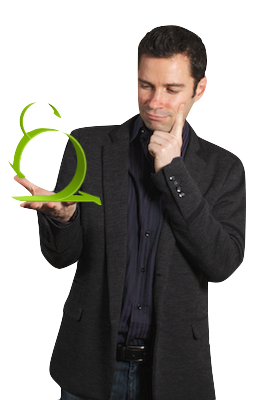

Gilles Mantel

Gilles est un consultant senior, directeur de projets agiles, de plus de 10 ans d’expérience. Il est impliqué sur des projets itératifs depuis plus de 7 ans.
Depuis 5 ans, il accompagne l’adoption des pratiques agiles et conseille sur les méthodologies pilotées par les tests (TDR, ATDD).
Ses compétences sur les méthodes agiles et les tests sont reconnues et il participe régulièrement en tant qu’orateur à des conférences.
- Dates 2012 : 10-11 octobre
- Dates 2013 : 30-31 janvier / 8-9 avril / 2-3 juillet / 5-6 novembre
- Pré-requis : Avoir participé à une formation ScrumMaster certifiante ou équivalent.
- Durée : 2 jours
- Prix inter-entreprise :
1350€ HT - Prix intra-entreprise :
5000€ HT - Lieu : Paris (inter-entreprise) / Selon les demandes du client (intra-entreprise) Les règles de la ScrumMaster Academy vous seront offertes à la fin du cours.